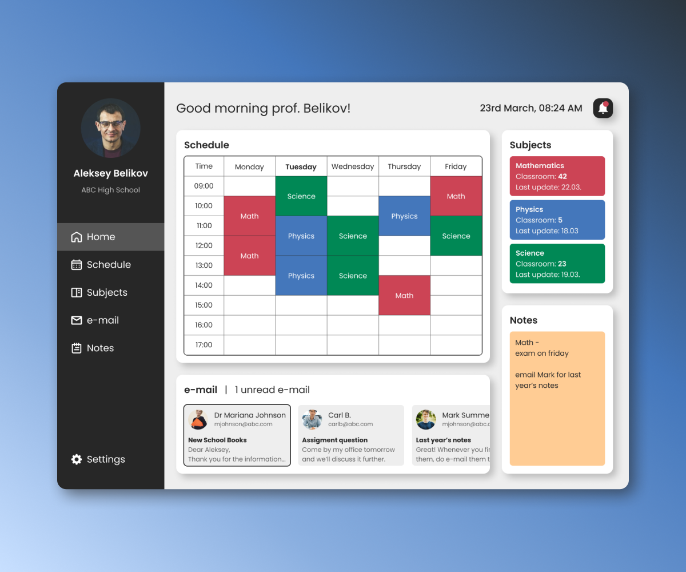
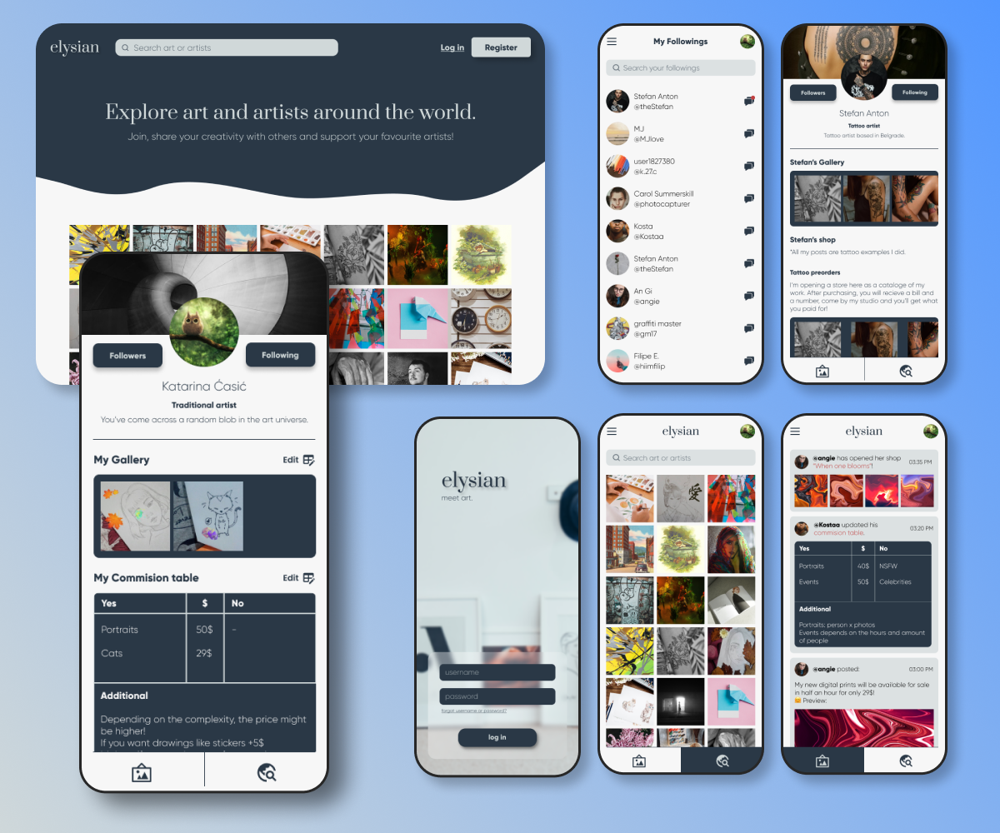
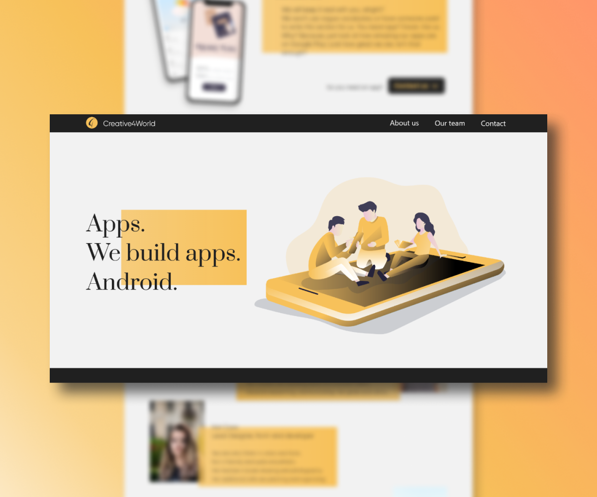

MrScore is a desktop/mobile app that helps teachers track students’ progress.

Problem
Teachers, especially elderly, often find it difficult to keep track of all their classes and students.
Having most of the lessons now being digitalized, it can be difficult for some of the teachers to keep up
with all the websites, next to their papers and documents.
Goal
MrScore would help teachers and professors all around the world with keeping track of all their students’ attendance, missions and scores.
It also provides them with their personal schedule and notes, allowing them to have all their necessary school documents in one place.
My part:
As a student, for practice, I’d kept records my classmates’ and my scores in Excel sheet.
As we had several elderly professors, most of the time they would take a lot of time from their class just finding the papers
with list of students’ names so they can take their attendance or noting their grades and points.
Consulting with two of my professors, I’ve noted their insights on the matter. For them, that would include the ability to send e-mails to students,
notifying them of their received grade. As mentioned, eldery, just as adult teachers would prefer to protected their eyes straining from the screen –
hence they’d wish for the option to change theme, from light to dark.
Userpersona
Wireframe
Final look
Prototype
Additional
Having all things at one place is already a huge assessment to the school organization, however there is loads of documentations,
school’s presentations and lessons that could be imported for easier access.
The application could be modified for students purposes as well. It can serve as a read only application.
It would print out received scores, and final grades given and signed by the teacher which then would be sent to the students via e-mail.
Furthermore, for high schoolers, the app could be more oriented towards students, regarding given information about colleges they could apply to
(their requirements, rules, school system etc.).
Teachers could also provide brief courses on basic topics (e.g. writing e-mails, how to make a payment).
MrScore could expand to being more than just a score tracker, whilst serving its main purpose,
it can also help principals when selecting students to enroll to their school, or helping teachers
when choosing students for certain extracurricular activities.
Other projects
Weather Forecast
Weather Forecast is an app with clean and simple UI, which shows current temperature anywhere in the world, 12 hours in ahead, and 7 days in advance.

elysian
elysian is a social media app that also has a form of marketplace platform that is based on visual arts, such as digital and traditional arts, 3D art, photography and other.

Creative4Wrold
Creative4World is an android app development company.